Last updated: 2026-05-31
Checks: 7 0
Knit directory: susie_love_experiments/
This reproducible R Markdown analysis was created with workflowr (version 1.7.2). The Checks tab describes the reproducibility checks that were applied when the results were created. The Past versions tab lists the development history.
Great! Since the R Markdown file has been committed to the Git repository, you know the exact version of the code that produced these results.
Great job! The global environment was empty. Objects defined in the global environment can affect the analysis in your R Markdown file in unknown ways. For reproduciblity it’s best to always run the code in an empty environment.
The command set.seed(20260419) was run prior to running
the code in the R Markdown file. Setting a seed ensures that any results
that rely on randomness, e.g. subsampling or permutations, are
reproducible.
Great job! Recording the operating system, R version, and package versions is critical for reproducibility.
Nice! There were no cached chunks for this analysis, so you can be confident that you successfully produced the results during this run.
Great job! Using relative paths to the files within your workflowr project makes it easier to run your code on other machines.
Great! You are using Git for version control. Tracking code development and connecting the code version to the results is critical for reproducibility.
The results in this page were generated with repository version f19bc28. See the Past versions tab to see a history of the changes made to the R Markdown and HTML files.
Note that you need to be careful to ensure that all relevant files for
the analysis have been committed to Git prior to generating the results
(you can use wflow_publish or
wflow_git_commit). workflowr only checks the R Markdown
file, but you know if there are other scripts or data files that it
depends on. Below is the status of the Git repository when the results
were generated:
Ignored files:
Ignored: .DS_Store
Ignored: .Rhistory
Ignored: .Rproj.user/
Untracked files:
Untracked: analysis/test.Rmd
Note that any generated files, e.g. HTML, png, CSS, etc., are not included in this status report because it is ok for generated content to have uncommitted changes.
These are the previous versions of the repository in which changes were
made to the R Markdown (analysis/two_implementations.Rmd)
and HTML (docs/two_implementations.html) files. If you’ve
configured a remote Git repository (see ?wflow_git_remote),
click on the hyperlinks in the table below to view the files as they
were in that past version.
| File | Version | Author | Date | Message |
|---|---|---|---|---|
| Rmd | f19bc28 | dodat-stats | 2026-05-31 | workflowr::wflow_publish(c("analysis/two_implementations.Rmd", |
Right now we have two versions of the implementation (within package
susielove) with the names susie_love_lambda and
susie_XL. Let me explain what are the differences and why
it actually matters and sheds some more light to the modeling
perspective.
Recall the prior for the unknown in-sample \(R\): \[R | R_0, \nu_0, \delta \sim \mathcal{IW}(\nu_0 R_0 + \delta D_0, \nu_0 + \delta +J + 1). \] Both implementations minimize the loss function being the negative ELBO, where the ELBO is:
\[\begin{align*} \mathcal{E}(q(b), R_q, \nu_q, \nu_0) & = \log \Gamma_{\! J}\left(\dfrac{\nu_q +J + 1}{2}\right) - \log \Gamma_{\! J}\left(\dfrac{\nu_{\delta} + J + 1}{2}\right) - \dfrac{\nu_q - \nu_{\delta} - 1}{2} \psi_{\! J}\left(\dfrac{\nu_q + J + 1}{2}\right) \nonumber\\ & - \dfrac{(\nu_{\delta} + J + 1)J}{2} \log |\nu_q| + \dfrac{(\nu_q + J + 1)J}{2} + \dfrac{\nu_{\delta} + J + 1}{2} \log |\nu_0 R_0 + \delta D_0| \nonumber\\ & - \dfrac{\nu_{\delta} + J + 2}{2} \log |R_q| - \dfrac{N}{2} \text{trace}(R_q \boldsymbol{B}) - \dfrac{1}{2}\text{trace}(R_q^{-1} \boldsymbol{V})\\ & + N v^\top \overline{b} - \mathrm{KL}(q(b) \| p(b)), \end{align*}\] (up to a constant only depends on \(J\) and \(N\)), where \(\nu_{\delta} = \nu_0 + \delta\), \[\begin{equation} \boldsymbol{V} = \dfrac{\nu_q + J + 1}{\nu_q} \left(\nu_0 R_0 + \delta D_0 + N vv^\top\right), \end{equation}\] and \[\boldsymbol{B} = \mathbb{E}_{q(b)} [bb^\top].\] The difference in implementation is:
The susie_love_lambda function implementation fixes
\(\lambda = \dfrac{\delta}{\nu_0 +
\delta}\) and only optimize the sum \(\nu_{\delta}:= \nu_0 + \delta\).
The susie_XL function implementation fixes \(\delta\) and only optimize \(\nu_0\).
They are just two way of parametrizing the same problem (they are different in what are fixed though). But I was surprise intitially that this created a large impact:
In susie_love_lambda, the optimal \(\nu_{\delta}\) is obtained very easily and
converges to the same value regardless of the intialization.
In susie_XL, the optimal \(\nu_{0}\) hardly moves away from the
initialization. Therefore it is very sensitive to the
initialization.
I have put more thought into it and conclude that it is because the
loss landscape of \(\nu_0\) in
susie_XL is much flatter than that of \(\nu_{\delta}\) in
susie_love_lambda (under the setting that the dimension
\(J\) is large and \(R_0\) is near low-rank). I will present the
math at the end of this workflowr file after demonstrate the two
methods.
First we use sim_2pop() to simulate two populations that
diverged 25 generations ago. POP1 is a large GWAS cohort (N = 25,000)
and POP2 is a small LD reference panel (N₀ = 200).
library(susielove)
seed <- 1
T_split <- 25
chrom <- "chr22"
start <- 20e6
end <- 21e6
N <- 25000L
N0 <- 200L
J <- 1000L
h2 <- 0.01
res <- sim_2pop(chrom, start, end,
T_split = T_split,
n_gwas = N,
n_ref = N0,
J = J,
h2 = h2,
seed = seed)
v <- res$v
R <- res$R
R0 <- res$R0
beta_true <- res$beta_true
causal_SNPs_loc <- res$causal_SNPs_loc
plot(v, pch = 16)
points(causal_SNPs_loc, v[causal_SNPs_loc], pch = 16, col = "red")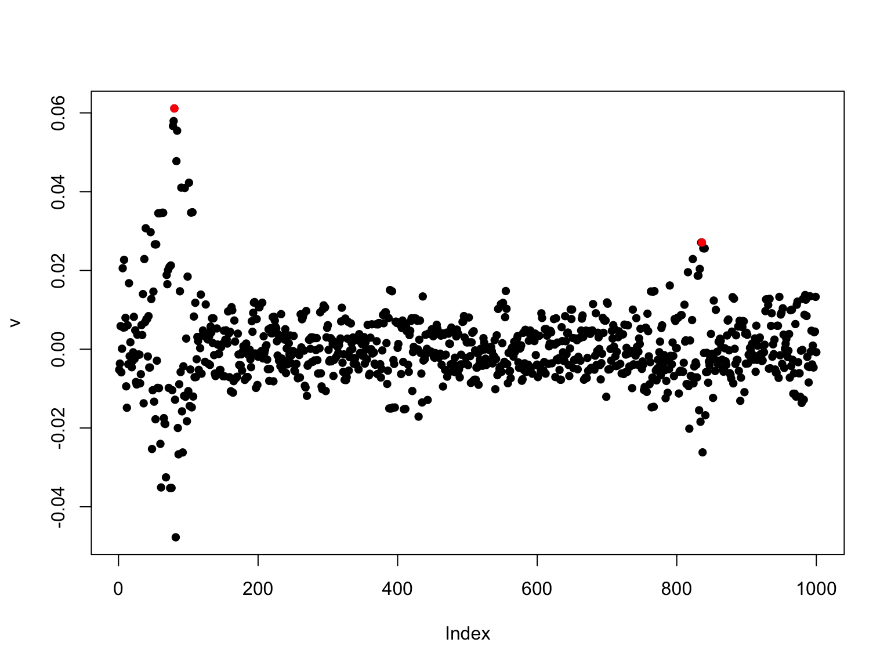
When the true in-sample LD is available, standard SuSiE works perfectly:
library(susieR)
fit <- susie_suff_stat(
XtX = N * R,
Xty = N * v,
n = N,
yty = N
)
susie_plot(fit, y = "PIP", b = beta_true, main = "In-sample cov mat")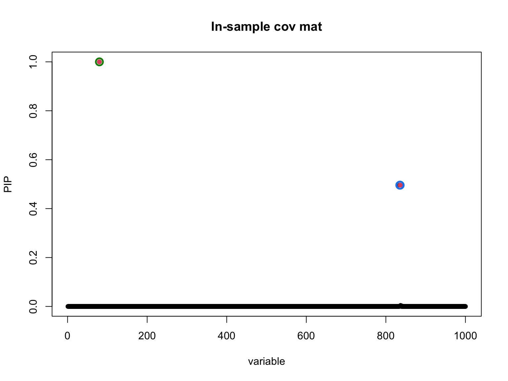
Using the mismatched LD reference directly leads to spurious signals:
fit_R0 <- susie_suff_stat(
XtX = N * R0,
Xty = N * v,
n = N,
yty = N,
L = 5
)
susie_plot(fit_R0, y = "PIP", b = beta_true, main = "Out-of-sample cov mat")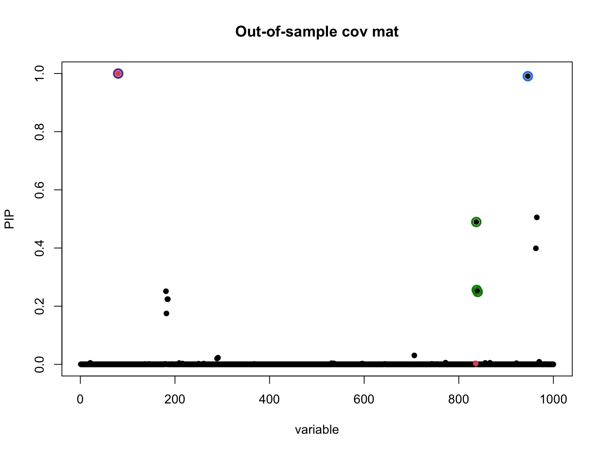
Here we use Matthew’s suggestion that we can adjust the diagonal of the out-of-sample to the diagonal of the in-sample. It works a bit better.
d0_inv_sqrt <- 1 / sqrt(diag(R0))
LD0 <- diag(d0_inv_sqrt) %*% R0 %*% diag(d0_inv_sqrt)
d_sqrt <- sqrt(diag(R))
R_tilde <- diag(d_sqrt) %*% LD0 %*% diag(d_sqrt)
fit_R_tilde <- susie_suff_stat(
XtX = N * R_tilde,
Xty = N * v,
n = N,
yty = N
)
susie_plot(fit_R_tilde, y = "PIP", b = beta_true,
main = "Out-of-sample cov mat (corrected diag)")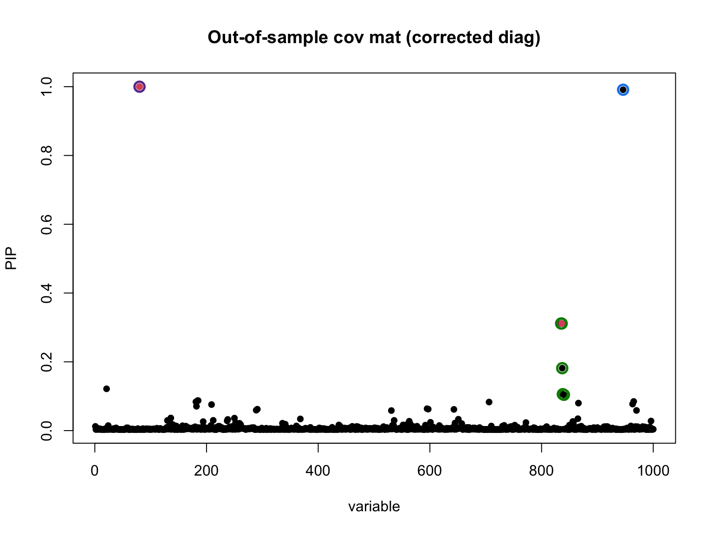
susie_love_lambda jointly learns the covariance matrix
while performing fine-mapping. Here \(\lambda\) is set to \(1 / (N_0 + 1) \approx 1 / 200 = 0.005\)
nu_delta_init = 1000
lambda <- 1 / (N0 + 1)
diag_R <- diag(R)
R_out <- R_tilde
k <- min(N0, J)
love_res <- susie_love_lambda(v, R_out, diag_R,
lambda,
N, L = 5,
k,
nu_delta_init = nu_delta_init,
step_susie = 20,
step_R = 30,
step_nu = 10,
max_iter = 30,
tol = 1e-4)
#> Iter 1 | Loss: -2.8906 | nu_q: 820.5 | nu_delta: 818.9
#> Iter 2 | Loss: -2.9245 | nu_q: 755.5 | nu_delta: 752.5
#> Iter 3 | Loss: -2.9339 | nu_q: 711.4 | nu_delta: 707.6
#> Iter 4 | Loss: -2.9367 | nu_q: 688.4 | nu_delta: 684.3
#> Iter 5 | Loss: -2.9388 | nu_q: 672.2 | nu_delta: 667.6
#> Iter 6 | Loss: -2.9395 | nu_q: 662.7 | nu_delta: 658.0
#> Iter 7 | Loss: -2.9398 | nu_q: 657.5 | nu_delta: 652.4
#> Iter 8 | Loss: -2.9400 | nu_q: 657.5 | nu_delta: 652.4
#> Iter 9 | Loss: -2.9400 | nu_q: 657.5 | nu_delta: 652.4
#> Converged at iteration 9
b_res <- love_res$b_res
R_q <- love_res$R_q
susie_plot_alpha(
alpha = b_res$alpha,
R = cov2cor(R_q),
b = beta_true,
main = paste0("SuSiE-LovE with lambda = ", lambda)
)On the convergence of \(\nu_{\delta}\): We initialize \(\nu_{\delta}\) at 1000 and very quickly it converges to 652. Let us try to initialize at a different point.
nu_delta_init = 100
lambda <- 1 / (N0 + 1)
diag_R <- diag(R)
R_out <- R_tilde
k <- min(N0, J)
love_res <- susie_love_lambda(v, R_out, diag_R,
lambda,
N, L = 5,
k,
nu_delta_init = nu_delta_init,
step_susie = 20,
step_R = 30,
step_nu = 10,
max_iter = 30,
tol = 1e-4)
#> Iter 1 | Loss: -2.4358 | nu_q: 303.0 | nu_delta: 301.6
#> Iter 2 | Loss: -2.8563 | nu_q: 453.1 | nu_delta: 450.1
#> Iter 3 | Loss: -2.9207 | nu_q: 539.2 | nu_delta: 535.0
#> Iter 4 | Loss: -2.9352 | nu_q: 588.2 | nu_delta: 583.1
#> Iter 5 | Loss: -2.9390 | nu_q: 615.6 | nu_delta: 610.1
#> Iter 6 | Loss: -2.9396 | nu_q: 615.6 | nu_delta: 610.1
#> Iter 7 | Loss: -2.9396 | nu_q: 615.6 | nu_delta: 610.1
#> Converged at iteration 7
b_res <- love_res$b_res
R_q <- love_res$R_q
susie_plot_alpha(
alpha = b_res$alpha,
R = cov2cor(R_q),
b = beta_true,
main = paste0("SuSiE-LovE with lambda = ", lambda)
)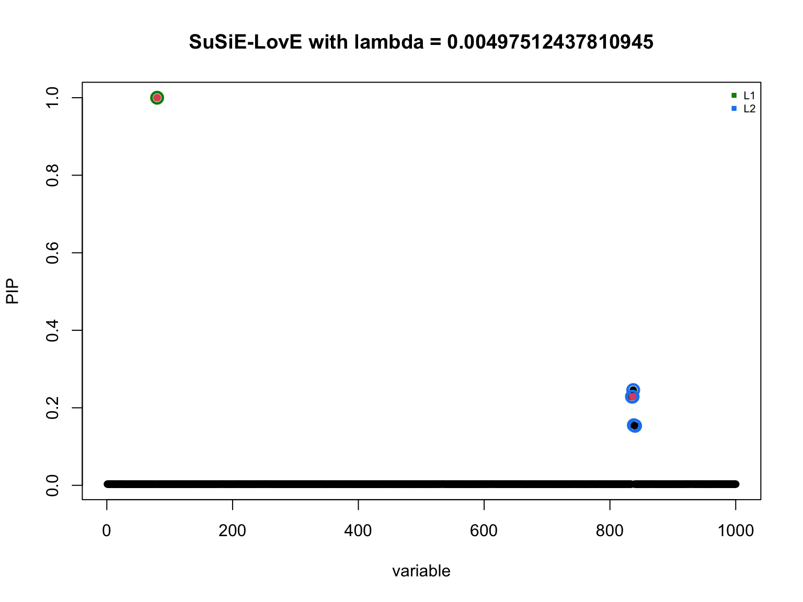
Observation: Here we initialize \(\nu_{\delta}\) at 100 and very quickly it converges to around 610, very close to the first run with vastly different initialization. I like this feature a lot since we will not worry too much about initialization.
Unfortunately it is not the case for the susie_XL implementation. Let us see in the following.
susie_XL fixes \(\delta\) and learn \(\nu_0\). Throughout we will fix \(\delta\) at 0.01 and varies the
initialization of \(\nu_0\).
nu_0_init = 1000
delta = 1e-2
max_iter = 100
XL_res <- susie_XL(v, R_out, diag_R,
delta,
N, L = 5,
k,
nu_0_init = nu_0_init,
max_iter_init=500,
step_susie = 20,
step_R = 50,
estimate_nu_0 = T,
estimate_delta = F,
nu_grad = T,
step_nu = 100,
delta_lower = 1e-4,
delta_upper = 10,
max_iter = max_iter,
tol = 1e-5)
#> Iter 1 | Loss: 31.4120 | nu_q: 1036.0 | nu_0: 979.7 | delta: 1.0000e-02
#> Iter 2 | Loss: 28.8453 | nu_q: 1033.6 | nu_0: 983.4 | delta: 1.0000e-02
#> Iter 3 | Loss: 27.3115 | nu_q: 1033.9 | nu_0: 982.9 | delta: 1.0000e-02
#> Iter 4 | Loss: 26.1630 | nu_q: 1033.2 | nu_0: 983.0 | delta: 1.0000e-02
#> Iter 5 | Loss: 25.0788 | nu_q: 1033.4 | nu_0: 982.1 | delta: 1.0000e-02
#> Iter 6 | Loss: 24.0961 | nu_q: 1032.6 | nu_0: 982.3 | delta: 1.0000e-02
#> Iter 7 | Loss: 23.0971 | nu_q: 1032.4 | nu_0: 982.1 | delta: 1.0000e-02
#> Iter 8 | Loss: 22.2296 | nu_q: 1031.9 | nu_0: 982.2 | delta: 1.0000e-02
#> Iter 9 | Loss: 21.6982 | nu_q: 1031.2 | nu_0: 981.6 | delta: 1.0000e-02
#> Iter 10 | Loss: 21.2507 | nu_q: 1030.3 | nu_0: 980.9 | delta: 1.0000e-02
#> Iter 11 | Loss: 20.8657 | nu_q: 1029.6 | nu_0: 980.8 | delta: 1.0000e-02
#> Iter 12 | Loss: 20.4387 | nu_q: 1028.7 | nu_0: 978.6 | delta: 1.0000e-02
#> Iter 13 | Loss: 19.9907 | nu_q: 1027.7 | nu_0: 978.7 | delta: 1.0000e-02
#> Iter 14 | Loss: 19.6705 | nu_q: 1026.3 | nu_0: 977.8 | delta: 1.0000e-02
#> Iter 15 | Loss: 19.3903 | nu_q: 1025.5 | nu_0: 977.3 | delta: 1.0000e-02
#> Iter 16 | Loss: 19.0931 | nu_q: 1023.8 | nu_0: 976.0 | delta: 1.0000e-02
#> Iter 17 | Loss: 18.6956 | nu_q: 1022.9 | nu_0: 976.1 | delta: 1.0000e-02
#> Iter 18 | Loss: 18.3809 | nu_q: 1021.5 | nu_0: 975.4 | delta: 1.0000e-02
#> Iter 19 | Loss: 18.0378 | nu_q: 1020.7 | nu_0: 975.3 | delta: 1.0000e-02
#> Iter 20 | Loss: 17.5635 | nu_q: 1019.0 | nu_0: 974.1 | delta: 1.0000e-02
#> Iter 21 | Loss: 16.9672 | nu_q: 1018.0 | nu_0: 974.8 | delta: 1.0000e-02
#> Iter 22 | Loss: 16.2682 | nu_q: 1017.2 | nu_0: 973.2 | delta: 1.0000e-02
#> Iter 23 | Loss: 15.2611 | nu_q: 1015.8 | nu_0: 974.6 | delta: 1.0000e-02
#> Iter 24 | Loss: 14.8584 | nu_q: 1015.6 | nu_0: 973.9 | delta: 1.0000e-02
#> Iter 25 | Loss: 14.6359 | nu_q: 1014.5 | nu_0: 973.8 | delta: 1.0000e-02
#> Iter 26 | Loss: 14.4249 | nu_q: 1014.0 | nu_0: 973.0 | delta: 1.0000e-02
#> Iter 27 | Loss: 14.2267 | nu_q: 1012.8 | nu_0: 972.9 | delta: 1.0000e-02
#> Iter 28 | Loss: 14.0072 | nu_q: 1012.3 | nu_0: 972.3 | delta: 1.0000e-02
#> Iter 29 | Loss: 13.7948 | nu_q: 1011.2 | nu_0: 972.3 | delta: 1.0000e-02
#> Iter 30 | Loss: 13.5544 | nu_q: 1010.6 | nu_0: 971.5 | delta: 1.0000e-02
#> Iter 31 | Loss: 13.3048 | nu_q: 1009.6 | nu_0: 971.7 | delta: 1.0000e-02
#> Iter 32 | Loss: 13.0212 | nu_q: 1008.8 | nu_0: 971.0 | delta: 1.0000e-02
#> Iter 33 | Loss: 12.6018 | nu_q: 1007.7 | nu_0: 970.5 | delta: 1.0000e-02
#> Iter 34 | Loss: 12.1694 | nu_q: 1006.9 | nu_0: 970.9 | delta: 1.0000e-02
#> Iter 35 | Loss: 11.7353 | nu_q: 1006.3 | nu_0: 970.1 | delta: 1.0000e-02
#> Iter 36 | Loss: 11.2621 | nu_q: 1005.8 | nu_0: 970.2 | delta: 1.0000e-02
#> Iter 37 | Loss: 10.9232 | nu_q: 1005.5 | nu_0: 969.7 | delta: 1.0000e-02
#> Iter 38 | Loss: 10.7323 | nu_q: 1004.8 | nu_0: 969.3 | delta: 1.0000e-02
#> Iter 39 | Loss: 10.5377 | nu_q: 1004.1 | nu_0: 968.9 | delta: 1.0000e-02
#> Iter 40 | Loss: 10.0003 | nu_q: 1001.7 | nu_0: 966.1 | delta: 1.0000e-02
#> Iter 41 | Loss: 9.3283 | nu_q: 1000.5 | nu_0: 967.1 | delta: 1.0000e-02
#> Iter 42 | Loss: 9.0092 | nu_q: 999.8 | nu_0: 966.9 | delta: 1.0000e-02
#> Iter 43 | Loss: 8.7086 | nu_q: 999.7 | nu_0: 966.2 | delta: 1.0000e-02
#> Iter 44 | Loss: 8.5086 | nu_q: 999.2 | nu_0: 966.1 | delta: 1.0000e-02
#> Iter 45 | Loss: 8.4152 | nu_q: 999.0 | nu_0: 965.6 | delta: 1.0000e-02
#> Iter 46 | Loss: 8.3576 | nu_q: 998.4 | nu_0: 965.2 | delta: 1.0000e-02
#> Iter 47 | Loss: 8.3152 | nu_q: 998.0 | nu_0: 964.7 | delta: 1.0000e-02
#> Iter 48 | Loss: 8.2786 | nu_q: 997.5 | nu_0: 964.4 | delta: 1.0000e-02
#> Iter 49 | Loss: 8.2377 | nu_q: 996.8 | nu_0: 963.7 | delta: 1.0000e-02
#> Iter 50 | Loss: 8.1962 | nu_q: 996.4 | nu_0: 963.5 | delta: 1.0000e-02
#> Iter 51 | Loss: 8.1456 | nu_q: 995.4 | nu_0: 962.6 | delta: 1.0000e-02
#> Iter 52 | Loss: 8.0844 | nu_q: 994.5 | nu_0: 962.0 | delta: 1.0000e-02
#> Iter 53 | Loss: 8.0386 | nu_q: 994.0 | nu_0: 961.5 | delta: 1.0000e-02
#> Iter 54 | Loss: 7.9864 | nu_q: 993.0 | nu_0: 960.9 | delta: 1.0000e-02
#> Iter 55 | Loss: 7.9411 | nu_q: 992.5 | nu_0: 960.4 | delta: 1.0000e-02
#> Iter 56 | Loss: 7.9016 | nu_q: 992.0 | nu_0: 960.0 | delta: 1.0000e-02
#> Iter 57 | Loss: 7.8554 | nu_q: 991.2 | nu_0: 959.3 | delta: 1.0000e-02
#> Iter 58 | Loss: 7.8058 | nu_q: 990.6 | nu_0: 958.9 | delta: 1.0000e-02
#> Iter 59 | Loss: 7.7631 | nu_q: 989.8 | nu_0: 958.4 | delta: 1.0000e-02
#> Iter 60 | Loss: 7.7191 | nu_q: 989.5 | nu_0: 958.1 | delta: 1.0000e-02
#> Iter 61 | Loss: 7.6413 | nu_q: 987.5 | nu_0: 956.4 | delta: 1.0000e-02
#> Iter 62 | Loss: 7.5439 | nu_q: 987.1 | nu_0: 956.3 | delta: 1.0000e-02
#> Iter 63 | Loss: 7.4989 | nu_q: 986.2 | nu_0: 955.6 | delta: 1.0000e-02
#> Iter 64 | Loss: 7.4515 | nu_q: 985.9 | nu_0: 955.4 | delta: 1.0000e-02
#> Iter 65 | Loss: 7.3787 | nu_q: 984.3 | nu_0: 954.0 | delta: 1.0000e-02
#> Iter 66 | Loss: 7.2976 | nu_q: 983.9 | nu_0: 954.0 | delta: 1.0000e-02
#> Iter 67 | Loss: 7.2460 | nu_q: 983.0 | nu_0: 953.2 | delta: 1.0000e-02
#> Iter 68 | Loss: 7.1899 | nu_q: 982.6 | nu_0: 953.0 | delta: 1.0000e-02
#> Iter 69 | Loss: 7.1168 | nu_q: 981.2 | nu_0: 951.8 | delta: 1.0000e-02
#> Iter 70 | Loss: 7.0330 | nu_q: 980.9 | nu_0: 951.8 | delta: 1.0000e-02
#> Iter 71 | Loss: 6.9255 | nu_q: 978.6 | nu_0: 949.7 | delta: 1.0000e-02
#> Iter 72 | Loss: 6.7754 | nu_q: 978.2 | nu_0: 949.7 | delta: 1.0000e-02
#> Iter 73 | Loss: 6.6514 | nu_q: 974.6 | nu_0: 948.4 | delta: 1.0000e-02
#> Iter 74 | Loss: 6.4539 | nu_q: 975.1 | nu_0: 947.8 | delta: 1.0000e-02
#> Iter 75 | Loss: 5.2861 | nu_q: 963.2 | nu_0: 937.8 | delta: 1.0000e-02
#> Iter 76 | Loss: 4.4972 | nu_q: 961.8 | nu_0: 939.7 | delta: 1.0000e-02
#> Iter 77 | Loss: 4.2159 | nu_q: 961.6 | nu_0: 938.8 | delta: 1.0000e-02
#> Iter 78 | Loss: 3.9766 | nu_q: 961.2 | nu_0: 938.7 | delta: 1.0000e-02
#> Iter 79 | Loss: 3.7530 | nu_q: 960.6 | nu_0: 938.7 | delta: 1.0000e-02
#> Iter 80 | Loss: 3.5209 | nu_q: 960.1 | nu_0: 938.6 | delta: 1.0000e-02
#> Iter 81 | Loss: 3.2698 | nu_q: 959.9 | nu_0: 938.1 | delta: 1.0000e-02
#> Iter 82 | Loss: 3.0070 | nu_q: 959.3 | nu_0: 938.6 | delta: 1.0000e-02
#> Iter 83 | Loss: 2.7894 | nu_q: 959.3 | nu_0: 937.9 | delta: 1.0000e-02
#> Iter 84 | Loss: 2.5916 | nu_q: 958.9 | nu_0: 938.1 | delta: 1.0000e-02
#> Iter 85 | Loss: 2.4682 | nu_q: 958.8 | nu_0: 937.5 | delta: 1.0000e-02
#> Iter 86 | Loss: 2.3435 | nu_q: 958.4 | nu_0: 937.3 | delta: 1.0000e-02
#> Iter 87 | Loss: 2.2504 | nu_q: 957.9 | nu_0: 937.3 | delta: 1.0000e-02
#> Iter 88 | Loss: 2.1131 | nu_q: 957.3 | nu_0: 937.1 | delta: 1.0000e-02
#> Iter 89 | Loss: 1.9910 | nu_q: 957.4 | nu_0: 936.7 | delta: 1.0000e-02
#> Iter 90 | Loss: 1.8743 | nu_q: 956.6 | nu_0: 936.7 | delta: 1.0000e-02
#> Iter 91 | Loss: 1.7295 | nu_q: 956.7 | nu_0: 936.3 | delta: 1.0000e-02
#> Iter 92 | Loss: 1.5798 | nu_q: 956.0 | nu_0: 936.2 | delta: 1.0000e-02
#> Iter 93 | Loss: 1.3757 | nu_q: 955.9 | nu_0: 936.1 | delta: 1.0000e-02
#> Iter 94 | Loss: 1.0709 | nu_q: 955.4 | nu_0: 935.2 | delta: 1.0000e-02
#> Iter 95 | Loss: 0.7935 | nu_q: 955.3 | nu_0: 935.4 | delta: 1.0000e-02
#> Iter 96 | Loss: 0.6798 | nu_q: 955.1 | nu_0: 934.8 | delta: 1.0000e-02
#> Iter 97 | Loss: 0.6293 | nu_q: 955.0 | nu_0: 934.7 | delta: 1.0000e-02
#> Iter 98 | Loss: 0.6105 | nu_q: 954.6 | nu_0: 934.1 | delta: 1.0000e-02
#> Iter 99 | Loss: 0.6031 | nu_q: 954.5 | nu_0: 933.9 | delta: 1.0000e-02
#> Iter 100 | Loss: 0.6024 | nu_q: 954.5 | nu_0: 933.9 | delta: 1.0000e-02
b_res <- XL_res$b_res
R_q <- XL_res$R_q
susie_plot_alpha(
alpha = b_res$alpha,
R = cov2cor(R_q),
b = beta_true,
main = paste0("SuSiE-XL with delta = ", round(XL_res$delta, 3))
)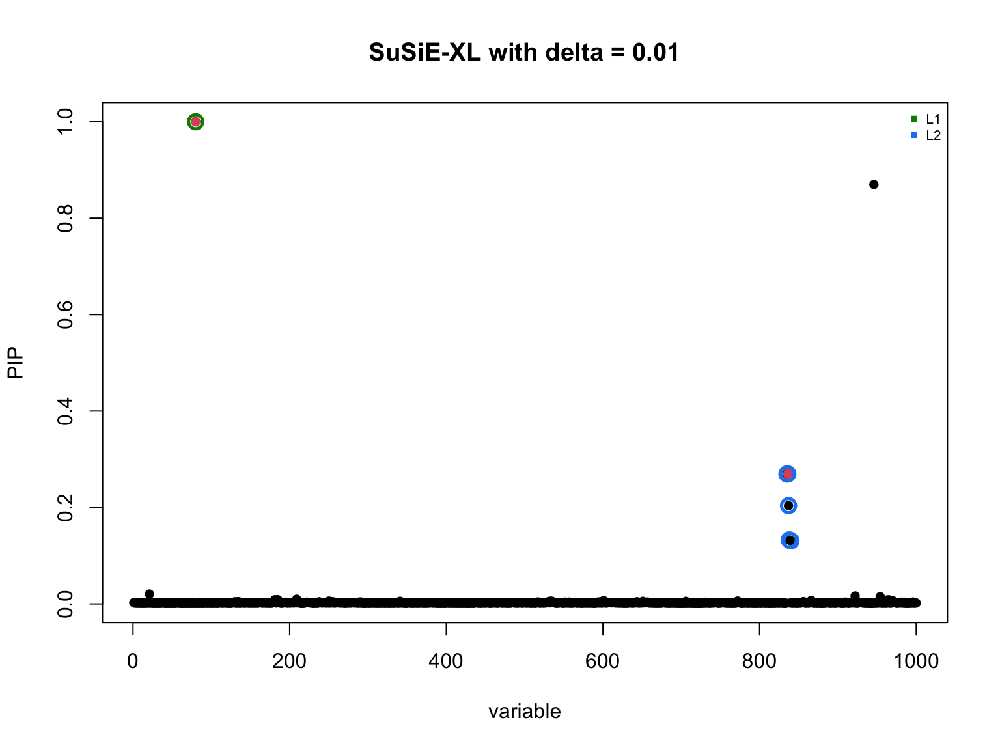
The loss decreases slowly (does not converge within 100 iterations of
the outer loop) when we set nu_0_init to 1000, where
convergence here means the objective function decreases less than
tol=1e-4. The optimal nu_0 also rarely changes
from the initial value. We can try changing it
nu_0_init = 100
delta = 1e-2
max_iter = 100
XL_res <- susie_XL(v, R_out, diag_R,
delta,
N, L = 5,
k,
nu_0_init = nu_0_init,
max_iter_init=500,
step_susie = 20,
step_R = 50,
estimate_nu_0 = T,
estimate_delta = F,
nu_grad = T,
step_nu = 100,
delta_lower = 1e-4,
delta_upper = 10,
max_iter = max_iter,
tol = 1e-5)
#> Iter 1 | Loss: 0.6567 | nu_q: 101.0 | nu_0: 100.1 | delta: 1.0000e-02
#> Iter 2 | Loss: -0.2663 | nu_q: 100.9 | nu_0: 99.9 | delta: 1.0000e-02
#> Iter 3 | Loss: -0.5972 | nu_q: 100.9 | nu_0: 99.8 | delta: 1.0000e-02
#> Iter 4 | Loss: -0.7642 | nu_q: 101.0 | nu_0: 99.6 | delta: 1.0000e-02
#> Iter 5 | Loss: -0.8722 | nu_q: 101.0 | nu_0: 99.6 | delta: 1.0000e-02
#> Iter 6 | Loss: -0.9467 | nu_q: 101.1 | nu_0: 99.5 | delta: 1.0000e-02
#> Iter 7 | Loss: -1.0209 | nu_q: 101.2 | nu_0: 99.5 | delta: 1.0000e-02
#> Iter 8 | Loss: -1.0816 | nu_q: 101.2 | nu_0: 99.4 | delta: 1.0000e-02
#> Iter 9 | Loss: -1.1105 | nu_q: 101.4 | nu_0: 99.4 | delta: 1.0000e-02
#> Iter 10 | Loss: -1.1385 | nu_q: 101.4 | nu_0: 99.4 | delta: 1.0000e-02
#> Iter 11 | Loss: -1.1581 | nu_q: 101.5 | nu_0: 99.5 | delta: 1.0000e-02
#> Iter 12 | Loss: -1.1812 | nu_q: 101.6 | nu_0: 99.5 | delta: 1.0000e-02
#> Iter 13 | Loss: -1.1933 | nu_q: 101.7 | nu_0: 99.5 | delta: 1.0000e-02
#> Iter 14 | Loss: -1.2039 | nu_q: 101.7 | nu_0: 99.5 | delta: 1.0000e-02
#> Iter 15 | Loss: -1.2126 | nu_q: 101.9 | nu_0: 99.6 | delta: 1.0000e-02
#> Iter 16 | Loss: -1.2215 | nu_q: 101.9 | nu_0: 99.6 | delta: 1.0000e-02
#> Iter 17 | Loss: -1.2284 | nu_q: 102.1 | nu_0: 99.6 | delta: 1.0000e-02
#> Iter 18 | Loss: -1.2336 | nu_q: 102.1 | nu_0: 99.6 | delta: 1.0000e-02
#> Iter 19 | Loss: -1.2340 | nu_q: 102.1 | nu_0: 99.6 | delta: 1.0000e-02
#> Iter 20 | Loss: -1.2497 | nu_q: 102.5 | nu_0: 99.9 | delta: 1.0000e-02
#> Iter 21 | Loss: -1.2541 | nu_q: 102.5 | nu_0: 99.9 | delta: 1.0000e-02
#> Iter 22 | Loss: -1.2541 | nu_q: 102.5 | nu_0: 99.9 | delta: 1.0000e-02
#> Converged at iteration 22
b_res <- XL_res$b_res
R_q <- XL_res$R_q
susie_plot_alpha(
alpha = b_res$alpha,
R = cov2cor(R_q),
b = beta_true,
main = paste0("SuSiE-XL with delta = ", round(XL_res$delta, 3))
)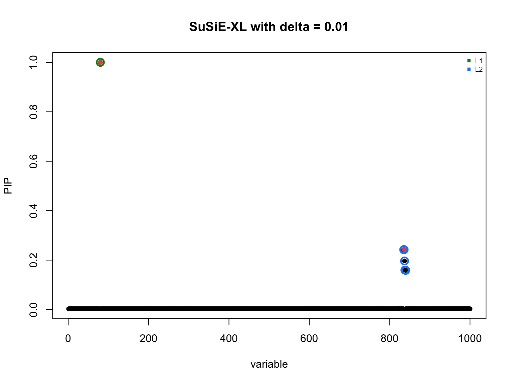
When changing nu_0_init to 100, the algorithm converges
in 22 iterations. But nu_0 also does not change much.
Therefore, by fixing \(\delta\) and
learn \(\nu_0\) this way, it is
actually not much different from just fixing both of them…
Why is it the case?
To be fair I will change the \(\delta\) and \(\nu_0\) in susie_XL to match with the final value of susie_love (\(\lambda = 0.005\) and \(\nu_0\approx 610\))
nu_0_init = 620
delta = nu_0_init / N0
# delta = 3
## so that delta / (delta + nu_0_init) = 1 / (N0 + 1) = lambda
max_iter = 100
XL_res <- susie_XL(v, R_out, diag_R,
delta,
N, L = 5,
k,
nu_0_init = nu_0_init,
max_iter_init=500,
step_susie = 20,
step_R = 50,
estimate_nu_0 = T,
estimate_delta = F,
nu_grad = T,
step_nu = 100,
delta_lower = 1e-4,
delta_upper = 10,
max_iter = max_iter,
tol = 1e-5)
#> Iter 1 | Loss: -2.9288 | nu_q: 622.5 | nu_0: 615.4 | delta: 3.1000e+00
#> Iter 2 | Loss: -2.9417 | nu_q: 623.1 | nu_0: 613.7 | delta: 3.1000e+00
#> Iter 3 | Loss: -2.9428 | nu_q: 623.1 | nu_0: 613.0 | delta: 3.1000e+00
#> Iter 4 | Loss: -2.9434 | nu_q: 622.7 | nu_0: 612.5 | delta: 3.1000e+00
#> Iter 5 | Loss: -2.9435 | nu_q: 622.7 | nu_0: 612.5 | delta: 3.1000e+00
#> Iter 6 | Loss: -2.9435 | nu_q: 622.7 | nu_0: 612.5 | delta: 3.1000e+00
#> Converged at iteration 6
b_res <- XL_res$b_res
R_q <- XL_res$R_q
susie_plot_alpha(
alpha = b_res$alpha,
R = cov2cor(R_q),
b = beta_true,
main = paste0("SuSiE-XL with delta = ", round(XL_res$delta, 3))
)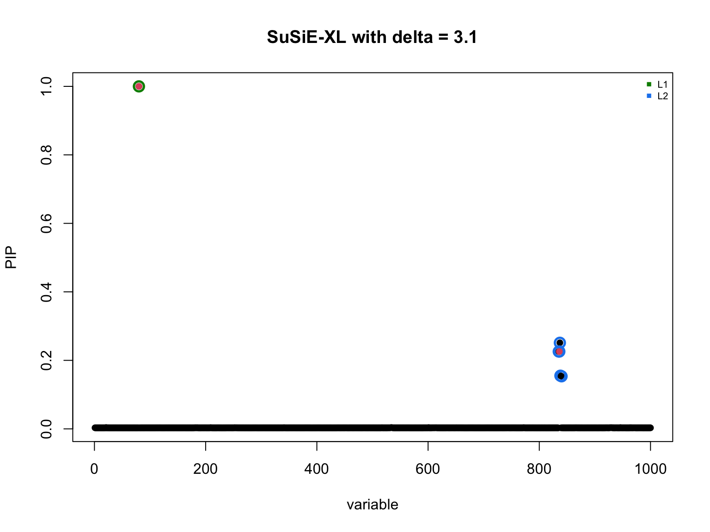
We can take a look at the loss function by varying \(\nu_0\) and keeps all other variables fixed.
length_nu_0 = 100
nu_0_list = seq(500, 700, length.out = length_nu_0)
loss_fn_vals_love = rep(0, length_nu_0)
R_bar = (1-lambda) * R_out + lambda * diag(diag_R)
for (i in c(1:length_nu_0)){
nu_delta = nu_0_list[i]
loss_fn_vals_love[i] = susielove:::compute_loss(love_res$b_res,
love_res$Z_final,
love_res$nu_q,
nu_delta,
v, N, R_bar, diag_R)
}
plot(nu_0_list, loss_fn_vals_love, type='l')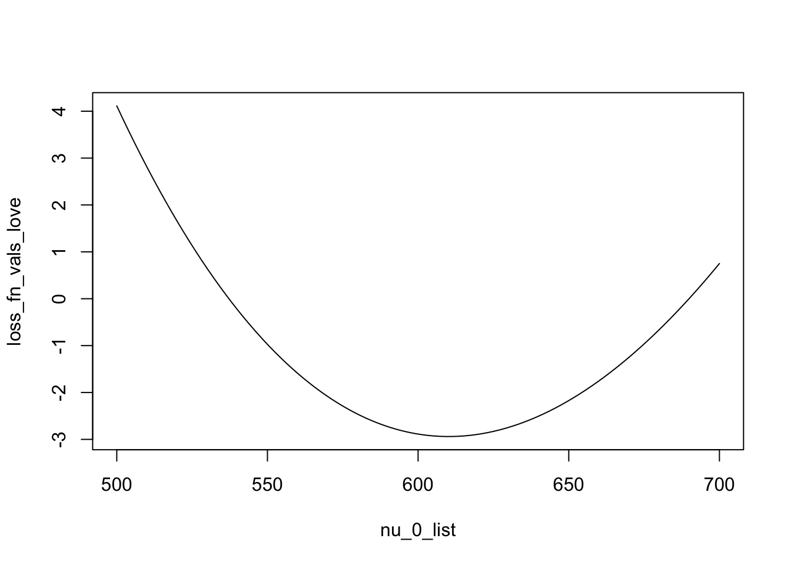
length_nu_0 = 100
nu_0_list = seq(500, 700, length.out = length_nu_0)
loss_fn_vals_XL = rep(0, length_nu_0)
## some supporting code
D0 = diag(diag_R)
# PRECOMPUTE: eigen_vals of R0_tilde = D0^{-1/2} R0 D0^{-1/2}
# so the log_det term of nu_0 * R0 + delta * D0 will be calculated easily
d_inv_sqrt <- 1 / sqrt(diag(D0))
R0_tilde <- d_inv_sqrt * R_out * rep(d_inv_sqrt, each = J)
eigen_vals_R0_tilde = eigen(R0_tilde, symmetric = TRUE, only.values = TRUE)$values
for (i in c(1:length_nu_0)){
nu_0 = nu_0_list[i]
loss_fn_vals_XL[i] = susielove:::compute_loss_XL(XL_res$b_res,
XL_res$Z_final,
XL_res$nu_q,
nu_0,
delta,
v, N, eigen_vals_R0_tilde, R_out, D0, diag_R)
}
plot(nu_0_list, loss_fn_vals_XL, type='l')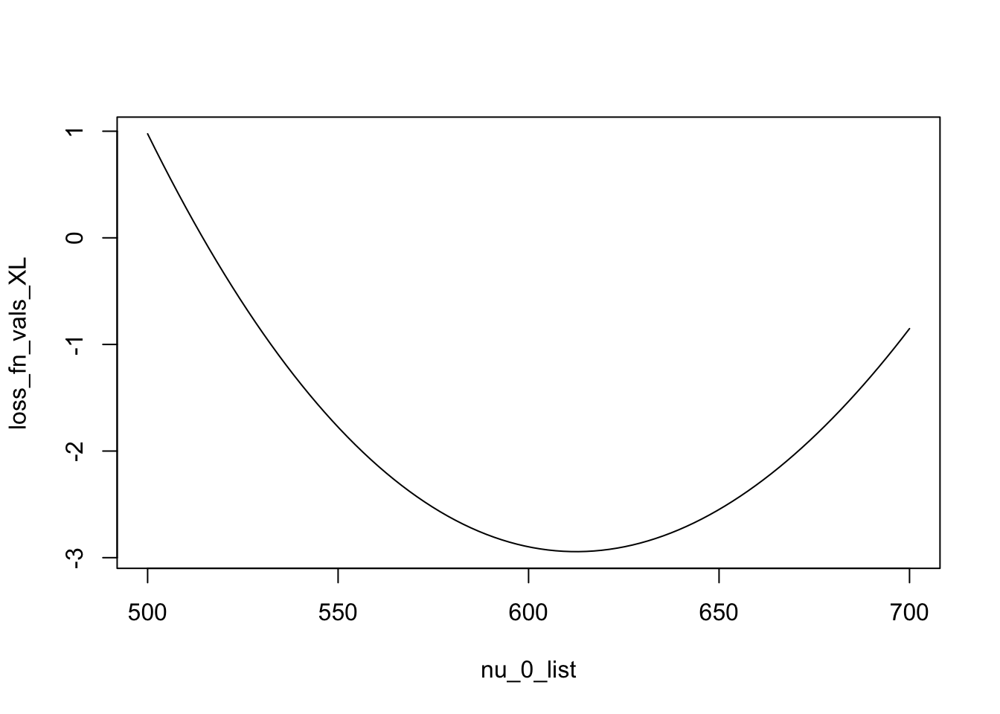
Combined plotylim_range <- range(c(loss_fn_vals_XL, loss_fn_vals_love))
plot(nu_0_list, loss_fn_vals_XL, type = 'l', col = 'red',
ylim = ylim_range, xlab = "nu_0", ylab = "Loss", main = "Loss Functions")
lines(nu_0_list, loss_fn_vals_love, col = 'blue')
legend("topright", legend = c("XL", "Love"), col = c("red", "blue"), lty = 1)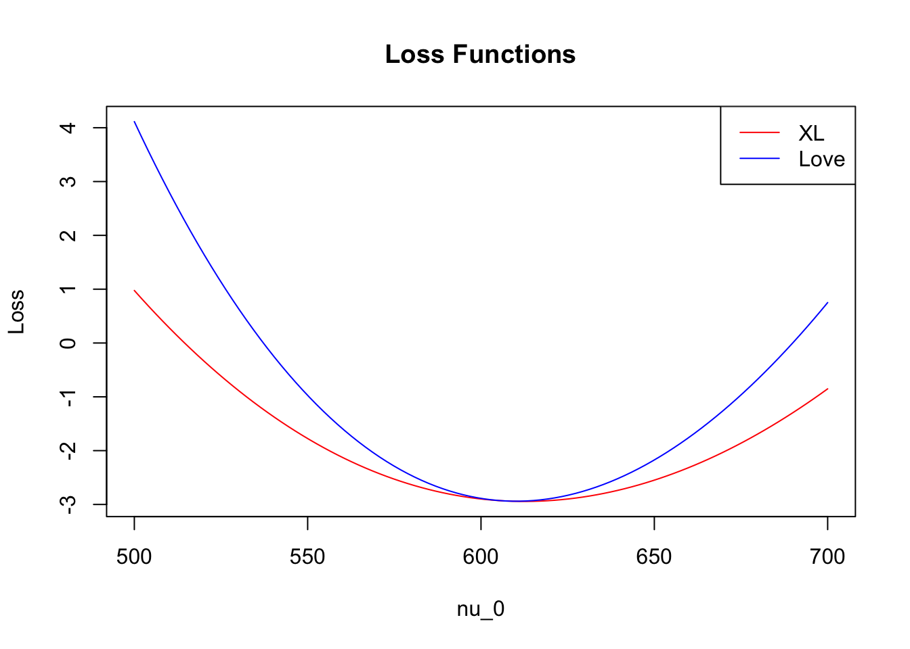
In general, the loss landscape of XL has smaller curvature, making the optimization struggle more.
Recall the ELBO:
\[\begin{align*} \mathcal{E}(q(b), R_q, \nu_q, \nu_0) & = \log \Gamma_{\! J}\left(\dfrac{\nu_q +J + 1}{2}\right) - \log \Gamma_{\! J}\left(\dfrac{\nu_{\delta} + J + 1}{2}\right) - \dfrac{\nu_q - \nu_{\delta} - 1}{2} \psi_{\! J}\left(\dfrac{\nu_q + J + 1}{2}\right) \nonumber\\ & - \dfrac{(\nu_{\delta} + J + 1)J}{2} \log |\nu_q| + \dfrac{(\nu_q + J + 1)J}{2} + \dfrac{\nu_{\delta} + J + 1}{2} \log |\nu_0 R_0 + \delta D_0| \nonumber\\ & - \dfrac{\nu_{\delta} + J + 2}{2} \log |R_q| - \dfrac{N}{2} \text{trace}(R_q \boldsymbol{B}) - \dfrac{1}{2}\text{trace}(R_q^{-1} \boldsymbol{V})\\ & + N v^\top \overline{b} - \mathrm{KL}(q(b) \| p(b)), \end{align*}\] (up to a constant only depends on \(J\) and \(N\)), where \(\nu_{\delta} = \nu_0 + \delta\), \[\begin{equation} \boldsymbol{V} = \dfrac{\nu_q + J + 1}{\nu_q} \left(\nu_0 R_0 + \delta D_0 + N vv^\top\right), \end{equation}\] and \[\boldsymbol{B} = \mathbb{E}_{q(b)} [bb^\top].\]
In susie_love_lambda, because the prior mean \(\bar{R} = (1-\lambda) R_0 + \lambda D_0\)
is fixed, the landscape of the loss function \(\mathcal{L}_{love} = - ELBO\) is easy to
understand. If we write the loss function wrt \(\nu_{\delta}\), we have
\[\mathcal{L}_{love} = \log \Gamma_{\! J} \left(\dfrac{\nu_\delta + J + 1}{2}\right) - \dfrac{J}{2}(\nu_\delta + J + 1) \log \nu_{\delta} + \text{linear term of } (\nu_{\delta})\] Hence, \[\dfrac{\partial^2 \mathcal{L}_{love}}{(\partial \nu_\delta)^2} = \dfrac{1}{4}\sum_{j=1}^{J} \psi'\left(\dfrac{\nu_\delta + J + 2 - j}{2}\right) - \dfrac{J (\nu_\delta - J - 1)}{2 \nu_\delta^2}. \] We can use the known inequality \(\psi'(z) > 1/z\) of the trigamma function to prove that this is positive, hence \(\mathcal{L}_{love}\) is convex in \(\nu_\delta\).
Now let’s consider the XL parametrization (using \(\nu_0\) and \(\delta\)). To streamline the argument, let
us assume \(D_0\) being the identity
matrix, and let \((\eta_j)_{j=1}^{J}\)
be the eigenvalues of \(R_0\). Then the
second-order derivative is
\[\dfrac{\partial^2 \mathcal{L}_{XL}}{(\partial \nu_0)^2} = \dfrac{1}{4}\sum_{j=1}^{J} \psi'\left(\dfrac{\nu_\delta + J + 2 - j}{2}\right) - \sum_{j=1}^{J}\dfrac{\eta_j}{\nu_0 \eta_j + \delta} + \sum_{j=1}^{J}\dfrac{\nu_0 + \delta + J + 1}{2}\dfrac{\eta_j^2}{(\nu_0 \eta_j + \delta)^2}. \] One can also show that this is positive thanks to the inequality \(\psi'(z) > 1/z\) of the trigamma function. To compare to \(\dfrac{\partial^2 \mathcal{L}_{love}}{(\partial \nu_\delta)^2}\), it is convenient to rearrange this as
\[\dfrac{\partial^2 \mathcal{L}_{XL}}{(\partial \nu_0)^2} = \dfrac{1}{4}\sum_{j=1}^{J} \psi'\left(\dfrac{\nu_\delta + J + 2 - j}{2}\right) - \sum_{j=1}^{J}\dfrac{\eta_j}{2(\nu_0 \eta_j + \delta)} + \sum_{j=1}^{J}\dfrac{\delta \eta_j^2 - \delta \eta_j + (J + 1)\eta_j^2}{2(\nu_0 \eta_j + \delta)^2}. \]
I think in the setting where many \(\eta_j\) are close to 0 (which is our case where \(R_0\) is near singular), it can be shown that the derivative \(\dfrac{\partial \mathcal{L}_{XL}}{\partial \nu_0}\) is generally smaller (in absolute value) than \(\dfrac{\partial \mathcal{L}_{love}}{\partial \nu_{\delta}}\). I need to check this more rigorously tho.
sessionInfo()
#> R version 4.5.2 (2025-10-31)
#> Platform: aarch64-apple-darwin20
#> Running under: macOS Tahoe 26.5
#>
#> Matrix products: default
#> BLAS: /System/Library/Frameworks/Accelerate.framework/Versions/A/Frameworks/vecLib.framework/Versions/A/libBLAS.dylib
#> LAPACK: /Library/Frameworks/R.framework/Versions/4.5-arm64/Resources/lib/libRlapack.dylib; LAPACK version 3.12.1
#>
#> locale:
#> [1] en_US.UTF-8/en_US.UTF-8/en_US.UTF-8/C/en_US.UTF-8/en_US.UTF-8
#>
#> time zone: America/New_York
#> tzcode source: internal
#>
#> attached base packages:
#> [1] stats graphics grDevices utils datasets methods base
#>
#> other attached packages:
#> [1] susieR_0.14.2 susielove_0.1.0 workflowr_1.7.2
#>
#> loaded via a namespace (and not attached):
#> [1] generics_0.1.4 sass_0.4.10 stringi_1.8.7 lattice_0.22-7
#> [5] digest_0.6.39 magrittr_2.0.4 evaluate_1.0.5 grid_4.5.2
#> [9] RColorBrewer_1.1-3 fastmap_1.2.0 plyr_1.8.9 rprojroot_2.1.1
#> [13] jsonlite_2.0.0 Matrix_1.7-4 processx_3.8.6 whisker_0.4.1
#> [17] reshape_0.8.10 mixsqp_0.3-54 ps_1.9.1 promises_1.5.0
#> [21] httr_1.4.8 scales_1.4.0 jquerylib_0.1.4 cli_3.6.6
#> [25] rlang_1.2.0 crayon_1.5.3 withr_3.0.2 cachem_1.1.0
#> [29] yaml_2.3.12 otel_0.2.0 tools_4.5.2 dplyr_1.2.0
#> [33] ggplot2_4.0.2 httpuv_1.6.17 reticulate_1.46.0 vctrs_0.7.1
#> [37] R6_2.6.1 png_0.1-9 matrixStats_1.5.0 lifecycle_1.0.5
#> [41] git2r_0.36.2 stringr_1.6.0 fs_2.1.0 irlba_2.3.7
#> [45] pkgconfig_2.0.3 callr_3.7.6 pillar_1.11.1 bslib_0.10.0
#> [49] later_1.4.8 gtable_0.3.6 glue_1.8.0 Rcpp_1.1.1
#> [53] tidyselect_1.2.1 xfun_0.56 tibble_3.3.1 rstudioapi_0.18.0
#> [57] knitr_1.51 farver_2.1.2 htmltools_0.5.9 rmarkdown_2.30
#> [61] compiler_4.5.2 getPass_0.2-4 S7_0.2.1